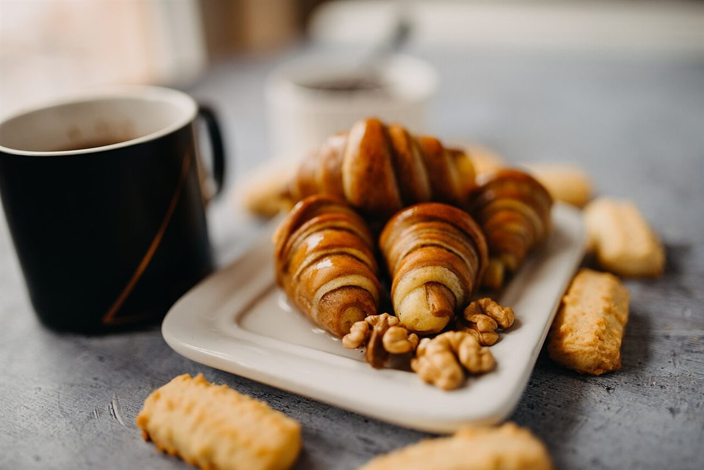
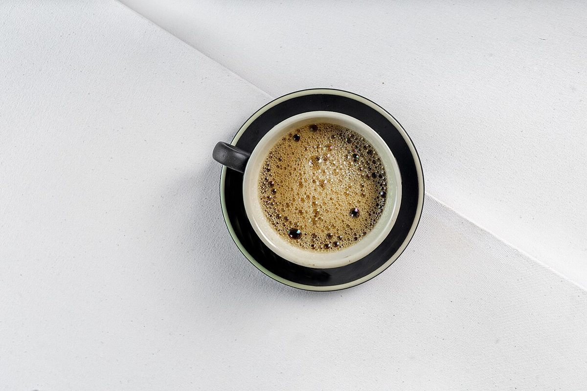
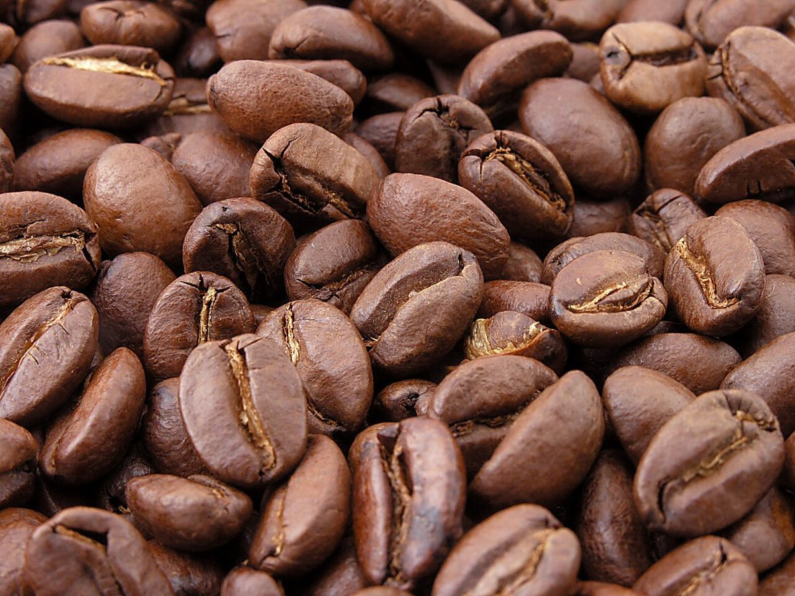
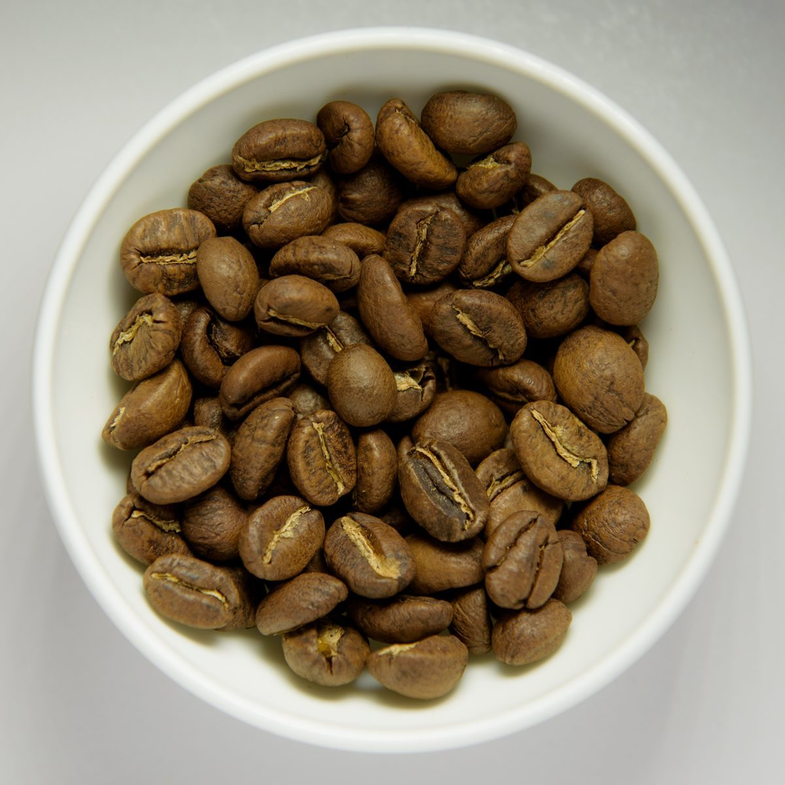

制作側の連想
「eL」から思いついた、片対数の方眼紙
これは制作側の連想で、お店の理念・由来とは無関係です。店名の由来は分かりません。制作側は、小文字の「e」を自然対数の底(2.718…)に、大文字の「L」を対数(log)の頭文字に見立てました。対数目盛りの方眼紙は、1から9へ進むほど目盛りの幅がだんだん狭くなります。このサイトでは、その幅の比で写真を並べたり、ページに番号を振ったりしています。
写真(イメージ)
1から9まで、幅が縮んでいく9枚。
写真はお店のものではなく、国外、もしくは撮影地不明のフリー素材のイメージです。お店の提供内容を示すものではありません。
- 1

- 2
- 3

- 4

- 5

- 6

- 7

- 8

- 9

ご案内
お店のこと(確認できたものだけ)
| 所在地 | 〒624-0816 京都府舞鶴市伊佐津213-27 |
|---|---|
| 電話 | なし |
| 営業時間 | 準備中 |
| 定休日 | 準備中 |
| ご予約 | 準備中 |
| 駐車場 | 準備中 |
| SNS | Instagram @elcafe_waffle |